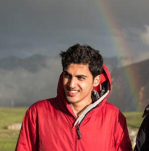

|  |
Armin Vakil
Electrical Engineering And Computer Science Department
Pennsylvania State University
arminvakil@{gmail.com, psu.edu}
|
|
Armin Vakil
My full name is Seyed Armin Vakil Ghahani, but you can call me Armin.
I am a graduate student at the Electrical Engineering And Computer Science Department at Pennsylvania State University. I am working under the supervision of Prof. Kandemir.
My research interests are computer architecture, memory systems, non-volatile memories, and distributed systems.
My full-detailed CV is available in this file.
Publications
- Armin Vakil,
Mahmut Taylan Kandemir,
Jagadish Kotra
DSM: A Case for Hardware-Assisted Merging of DRAM Rows with Same Content, In Proceedings of the ACM on Measurement and Analysis of Computing Systems, (SIGMETRICS 2020)
- Mohammad Bakhshalipour,
Aydin Faraji,
Armin Vakil,
Farid Samandi,
Pejman Lotfi-Kamran,
Hamid Sarbazi-Azad
Reducing Writebacks Through In-Cache Displacement ACM Transactions on Design Automation of Electronic Systems, (TODAES 2019)
- Armin Vakil,
Sara Mahdizadeh Shahri,
Mohammad Bakhshalipour,
Pejman Lotfi-Kamran,
Hamid Sarbazi-Azad
Making Belady-Inspired Replacement Policies More Effective Using Expected Hit Count arXiv preprint (arXiv 2018)
- Armin Vakil,
Sara Mahdizadeh Shahri,
Mohammad-Reza Lotfi-Namin,
Mohammad Bakhshalipour,
Pejman Lotfi-Kamran,
Hamid Sarbazi-Azad
Cache Replacement Policy Based on Expected Hit Count, IEEE Computer Architecture Letters (CAL 2017)
Research Experience
Honors and Awards